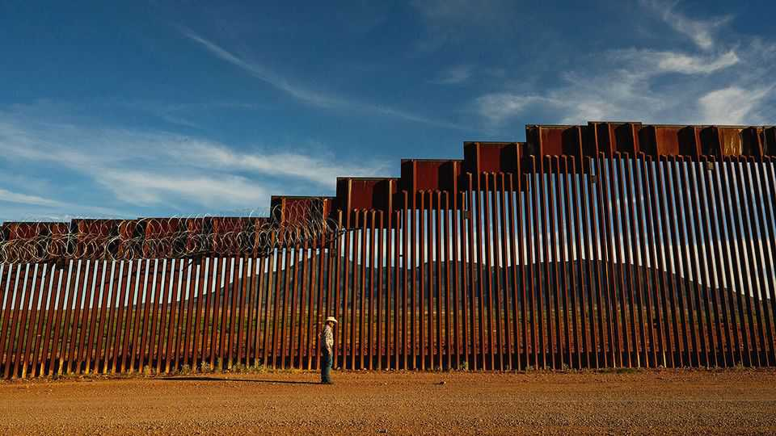
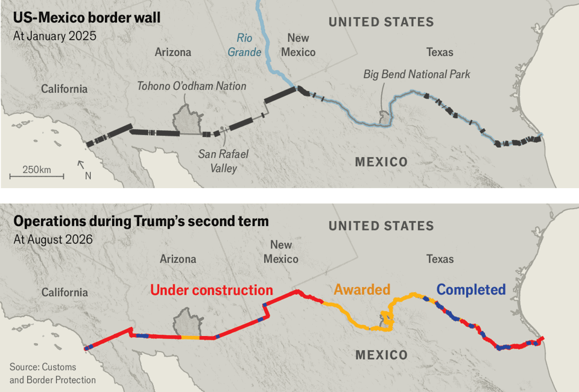

Donald Trump is at last building his border wall
The barrier serves many goals, but may fail at its most important one

Aug 27th 2026
Above the dirt roads and cattle guards of Arizona’s San Rafael Valley, welders are at work. Sparks fly as a man stitches flat pieces of steel to concrete-filled beams. Eventually, two walls, each 30-feet (9m) in height and running in parallel, will stretch across the valley’s remote grasslands, dividing Arizona from Sonora, Mexico.
“I will build a great, great wall,” Donald Trump promised in 2015, in the speech announcing his run for the White House. More than a decade later, the barrier in the San Rafael Valley is just one section of a “smart wall” that the White House is planning across America’s border with Mexico. Not since the interstate highway system has the federal government embarked on a construction project of similar scale.
The wall serves more than one purpose, and will have broad effects. To Mr Trump’s base, it helps to fulfil a campaign promise. To government contractors, it presents an opportunity. To would-be migrants, it provides an enduring symbol of Mr Trump’s command to keep out. The wall will transform the nature of the border between America and Mexico, and the communities that reside near it. However the wall’s purported goal is to end illegal immigration, and on that it will have limited impact.
America’s border with Mexico spans nearly 2,000 miles (3,219km). Those seeking to curb migration across it have long faced a basic problem: when they would increase enforcement on one part of the vast frontier, migrants would simply go around. But since the 2010s, migrants have responded mainly not to shifts in enforcement but shifts in broader policy, particularly on asylum. Migrants determined that they should give themselves up to Border Patrol agents, rather than try to outrun them, a practice that surged in response to the more lenient stance of Joe Biden’s presidency. Customs and Border Protection (CBP), the agency tasked with securing America’s borders, recorded more than 300,000 migrant encounters at the southern border in December 2023.
The number of migrant encounters with Border Patrol began to plummet towards the end of Mr Biden’s term when he, belatedly, restricted asylum. They have dropped a further 79% in Mr Trump’s second term. The president all but ended asylum, and his aggressive detention and deportation campaign serves as a deterrent.
CBP is taking a victory lap. Smugglers are no longer capable “of running 50, 100, 300 people through at a time”, says John Morris, the chief of Border Patrol in the Tucson sector, which spans hundreds of miles in Arizona. “It’s onesies and twosies.” Yet the president is keen to build his wall nonetheless, to create a barrier that will withstand any loosening in policy by his successors.
Some wall already exists (see map). Every president since George H.W. Bush has erected border barriers, including the Democrats. In Cochise County, Arizona, a rust-coloured 18-foot wall with concertina wire built during George W. Bush’s presidency connects with a 30-foot steel wall, part of the 450 miles of barriers Mr Trump erected in his first term, mostly to replace existing ones.

The border is already equipped with technology, too. The Cochise County sheriff’s department operates roughly 1,300 cameras that capture images of potential migrants (and sometimes hikers). Sensors alert CBP when people get close to the border. When your correspondent visited the frontier with Verlon Jose, chairman of the Tohono O’odham Nation, a Native American reservation, agents showed up in trucks. Mexico’s military soon arrived on their side of the border. A soldier holding a gun surveyed the scene before deciding that the group posed no threat.
However no previous administration has attempted to build a border wall of this scale or sophistication. The One Big Beautiful Bill Act, which Congress passed last year and which administration officials lovingly refer to as “OB3”, allocates $47bn to barriers, access roads and technology. Another $20bn from OB3 allows CBP to expand its ranks and buy new kit.
When Mr Trump began his second term, nearly 650 miles of wall snaked across the southern border. Now contracts have been awarded for new barriers spanning more than two-thirds of the frontier. He plans to wall off more than 600 more miles of previously naked terrain, and upgrade or supplement existing stretches of barriers. To complement the palisade of steel beams, orange buoys connected by underwater netting will deter migrants from trying to swim across the Rio Grande. Vehicle barriers, sensors, cameras and surveillance towers will fill any gaps.
Funds for the wall must be spent by October 2029, but the White House wants to build as much as possible before Mr Trump leaves office. At the Border Security Expo, a conference in Phoenix in May, officials explained their spending strategy. “We’re front-loading it,” said Jaclyn Rubino, who until recently oversaw the bill’s disbursement with the Department of Homeland Security (DHS), the agency that includes CBP. “By the end of September in this fiscal year, we are going to be obligating at least 75%, if not more, of the funding that has been given to us.”
This has unleashed a frenzy of bidding for contracts. In Phoenix, sales reps hawked tactical gear, drones and solar panels disguised as rocks, to power cameras and sensors. The boom has a few clear winners. Nearly 65% of the roughly $22bn awarded by CBP for wall construction in this fiscal year went to just two firms: Fisher Sand & Gravel and Barnard Construction. Their bosses have previously donated to Mr Trump or other Republicans.
It is unclear, however, that the wall will be the permanent deterrent that Mr Trump wants. Despite all the frenetic building, it may not be completed by the time he leaves office. CBP says it plans to finish construction in 2028, but as of August 19th just 11% of the planned new wall had been built. In August bulldozers trundled into Big Bend National Park in Texas, where the Rio Grande cuts through towering canyons. Watching heavy machinery tear through the park outraged locals, Democrat and Republican, whose lobbying convinced CBP to halt work temporarily.
Even if the wall is erected precisely as planned, asylum policy, if loosened once more, would give migrants a route into America, by encouraging them to present themselves at legal points of entry. And migrants who are most desperate to enter America will find ways to do so. Smugglers already use cutting torches to slice the wall’s steel beams and sledgehammers to knock out concrete, explains Jesse Mitchell, a Cochise County sheriff’s deputy. “They try to cut it real smooth, so agents don’t see it when they’re patrolling the line, so they can keep on crossing bodies.” CBP is already warning that cartels, which do most cross-border smuggling of people and drugs, will try tunnels, drones and maritime routes.
Those attempts may inspire future politicians to introduce new deterrents. In 2011 Barack Obama, then investing in more modest construction along the border, predicted that Republicans would always demand tougher defences. “Now they’re going to say we need to quadruple the Border Patrol,” he told a crowd in El Paso, Texas. “Maybe they’ll need a moat. Maybe they want alligators in the moat.”
In the meantime, border communities are bracing for change. Despite the delay in Big Bend, construction is under way even in rugged areas where very few migrants cross. “If you’re gonna come across this way, you’re gonna suffer the elements of Arizona,” says Mr Mitchell in the San Rafael Valley. “Everything out here will bite you or poke you or stab you.”
What is treacherous to humans is treasure for wildlife. The Centre for Biological Diversity, a conservation outfit, sued the administration to try to stop construction, but was stymied by waivers, authorised decades ago, that allow the government to build even in habitat for endangered species such as jaguars and ocelots. “This is like the biological gem of southern Arizona,” laments Russ McSpadden, an advocate with the group.
The Tohono O’odham Nation has sued to stop the wall, too, arguing that building it would violate tribal sovereignty. The Nation was split by the Gadsden Purchase of 1854, which created the modern boundary between America and Mexico. New wall would separate about 2,000 members in Mexico from their American counterparts. “We didn’t cross the border, the border crossed us,” says Mr Jose, the Nation’s chairman. A federal judge declined to block construction, and on August 25th wall contractors showed up for work.
As building continues, Border Patrol remains on high alert. Mr McSpadden regularly passes agents patrolling the San Rafael Valley’s grasslands. On one recent evening, he spotted an officer standing on the roof of a truck, staring at something in the direction of the wall. Mr McSpadden prefers to view the landscape with wonder, rather than vigilance. “I’d like to think they were just looking at the moon.” ■
Stay on top of American politics with The US in brief, our daily newsletter with fast analysis of the most important political news, and Checks and Balance, a weekly note that examines the state of American democracy and the issues that matter to voters.